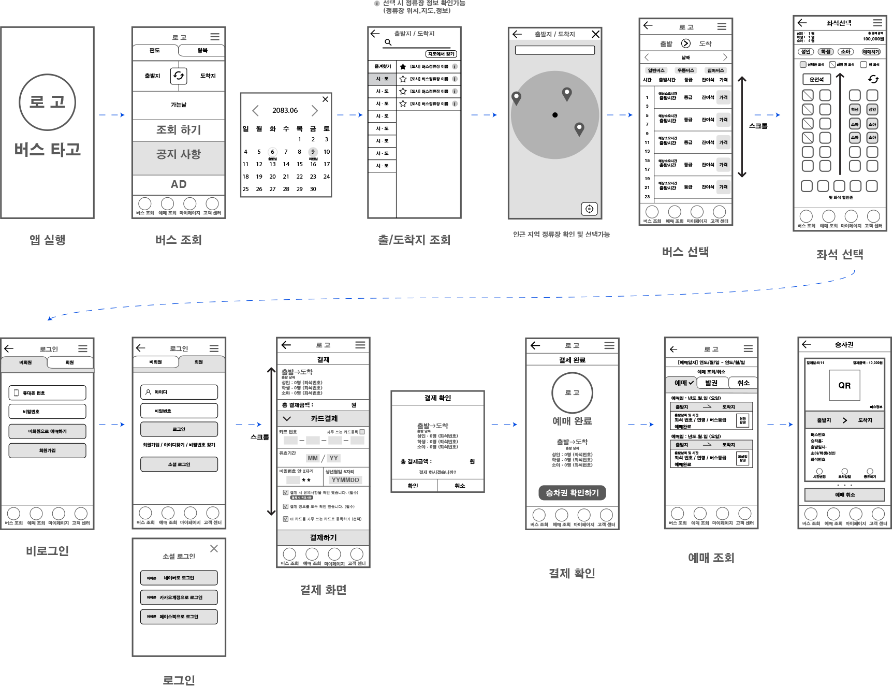
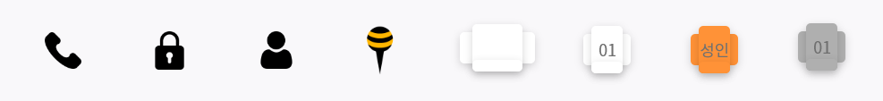

application UI / UX renewal (team project)
버스타고
UI / UX redesign
application UI / UX renewal (team project)
버스타고
UI / UX renewal
period
2020.05.12 ~ 2020.07.10
role
research 85%
design/prototypeTool 80%
communication/teamwork 100%type
어플리케이션 UI / UX 디자인 (팀 프로젝트)
introduction
전국 시외버스 승차권 통합 예매 어플 "버스타고"
터미널 방문 없이 전국 시외버스 터미널의 승차권 예매 및 취소,
운행/노선 정보 등 다양한 서비스 제공
Available Service : 승차권 예매, 승차권 조회, 예매 취소, 마이페이지, 터미널 정보
problems
다양한 혜택과 기능을 제공하고 있지만 전체적으로
올드하고 복잡한 디자인과 시선이 분산되는 배치로 인해
가독성이 떨어지는 등 어플을 사용하는데 불편한 점이 많음
출처 : 구글 플레이 버스타고 사용자 리뷰
application research
- 문제점
- 복잡한 유저 인터페이스로 사용자에게 혼란 야기
- 시선 분산되는 요소의 존재
- 앱 사용 목적지에 도달하기 위한 과정의 복잡함
- 위치 기반 서비스의 부재
- 글씨가 영역을 넘어갈 경우 보이지 않음
- 구분되지 않는 터치 영역
- 불필요한 아이콘 배치
- 작은 글씨 크기로 가독성 떨어짐
- 앱 이용 가이드의 부재
가독성이 떨어지고 사용자의 니즈를 충족시키지
못하는 시외버스 예매 어플
project goal
"남녀 노소 누구나 이용하기 쉬운 버스 예매 어플"
개선 목표 :
UI / UX 디자인 개선을 통해 취약 계층을 포함한 모든 사용자가
앱을 이용하는 데 매끄러운 경험을 할 수 있는 앱
main target
리서치 결과 앱 사용률이 높게 나온
20-30대 화이트 칼라(내근직) 남성으로 선정
competitor analysis
버스타고 UI 개선 방향 수립을 위한 비슷한 목적을 가진 경쟁사 어플 선정 및 각 어플의 장단점 분석
-
flix bus app
유럽 버스 티켓 예약 어플지도에서 출·도착지 선택 가능
간단한 사용법과 깔끔한 UI
결제 방법의 다양함
출·도착지까지의 거리 단위 선택 가능(마일, 킬로미터)
QR 코드 방식의 승차권 지원언어 변경 불가(영어만 지원)
버스 운행 노선 찾기 어려움
환불 규정 등의 세부적인 안내 찾기 어려움 -
 korail app
korail app
코레일 승차권 예약 어플역에 일찍 도착하면 더 빠른 열차 추천
첫 화면에 필요한 설정을 한 눈에 보기 좋게 구성
간단한 사용법과 깔끔한 UI
지도를 통한 노선 확인 및 출·도착지 설정 가능
좌석이 순방향인지 역방향인지 보기 쉬움모바일 승차권을 다른 사람과 공유 및 전달 불가능
멤버십 카드 메뉴로 이동 시 사전 안내 없이
화면 밝기가 최대치로 적용됨 -
good morning MIRI app
광역 버스 좌석 예약 어플한 눈에 알아보기 쉬운 디자인
광역 버스 예약이라는 유일한 어플
간단한 사용 방법첫 화면의 메뉴 아이콘과 MIRI 센터 아이콘이 비슷하여 혼란을 줌
가독성이 떨어지는 정류장 설명문
선택이 안 되는 아이콘이 있어 혼란을 줌
버스 조회를 위한 선 결제 필요
버스타고 UI direction
-
As is
복잡한 유저 인터페이스와 올드한 디자인, 가독성이 떨어지는 글씨 크기 등
앱을 이용하는데 불편함을 제공하는 어플위치 기반 서비스와 지도 기능, 최소화된 버스 예매 과정과 이용 가이드 등의
사용자의 니즈를 충족시키지 못하는 어플 -
To be
불필요한 메뉴와 아이콘 정리, 앱 사용 목적에 맞는 메뉴 구성,
깔끔하고 직관적인 디자인으로 가시성이 높고 사용자가 정보를 쉽게 얻을 수 있는 어플유저 중심의 인터페이스와 앱 사용 과정의 최소화, 가이드 기능 활성화로
사용자의 니즈를 충족시키는 어플
improvement
-
복잡한 유저 인터페이스, 좌석 선택 창의 분리로 인한 시선 분산
메인 화면의 절반을 차지하던 광고 창 축소 후 필요한 정보들로
구성된 깔끔한 메인 화면 구성, 편리한 이동을 위해 하단에 주요
기능으로 구성된 내비게이션 바 배치
좌석 선택 창을 상단에 하나로 정리하여 배치 -
앱 사용 목적에 도달하는 과정의 복잡함
(왕복 예약 : 가는 편 선택 - 결제 -오는 편 선택 - 결제)앱 사용 과정 최소화
(왕복 예약 : 가는 편 선택 - 화면 전환 알림창 - 오는 편 선택 -결제) -
위치 기반 서비스와 지도, 앱 이용 가이드의 부재
GPS를 활용한 위치 기반 서비스, 지도를 통한 출·도착지 설정 UI 구현
버스 선택 창 스와이프 가이드 제공 -
올드한 디자인, 글씨가 영역을 넘어갈 경우 보이지 않는 문제,
구분되지 않는 터치 영역, 불필요한 아이콘, 작은 글씨 크기로
인한 가독성 저하깔끔하고 가독성 좋은 폰트와 폰트 크기 적용, 불필요한 아이콘과
메뉴 정리, 간단하고 직관적인 디자인
wireframes
design guide
display
android 360x740dp
keyword
- # 귀여운
- # 즐거운
- # 심플한
"cash bee happy"
기존 브랜드의 귀여움, 버스 타고 여행 갈 때의 즐거움을
담은 디자인과 필요한 정보만을 담은 심플한 구조
color
- #ebebeb
- #ffd126
- #ff9237
- #ec5454
- #262626
캐시비 캐릭터의 상징인 벌의 색상과 그에 어울리는 색상 선택
font
- NotoSans KR Medium
- NotoSans KR Bold
가독성 좋은 구글 기본 폰트 NotoSans KR 사용
Medium은 기본, Bold는 타이틀에 사용
icon
output preview
more detail information
더 자세한 UI / UX 개선 과정이 담긴 기획서 파일(PDF),
리뉴얼된 앱 프로토타입 보러가기